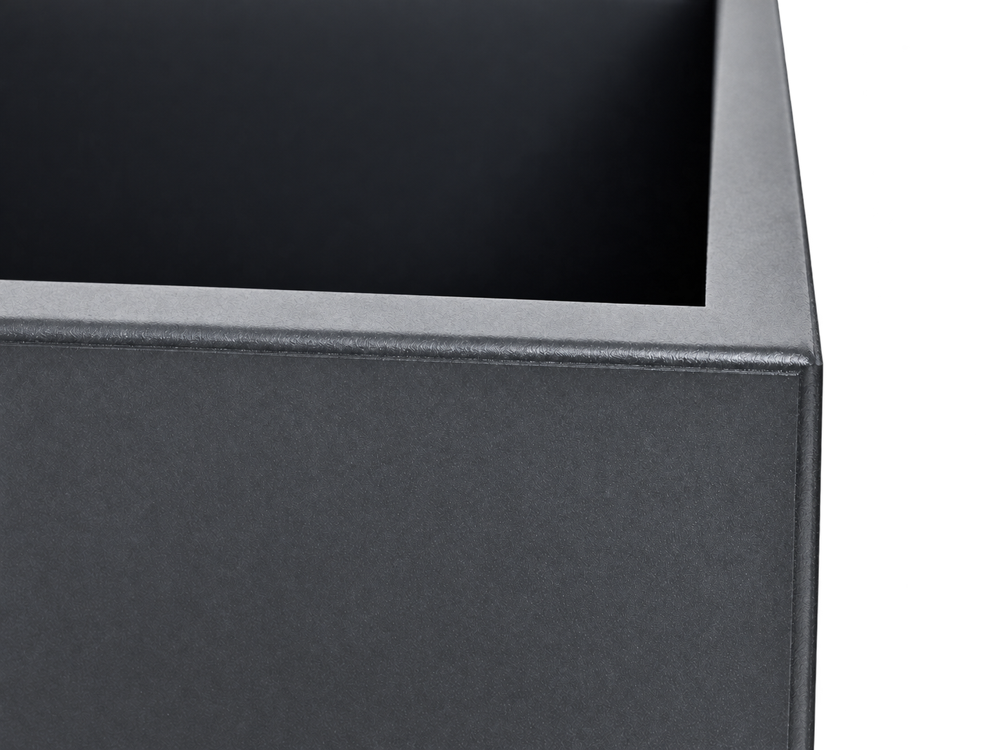
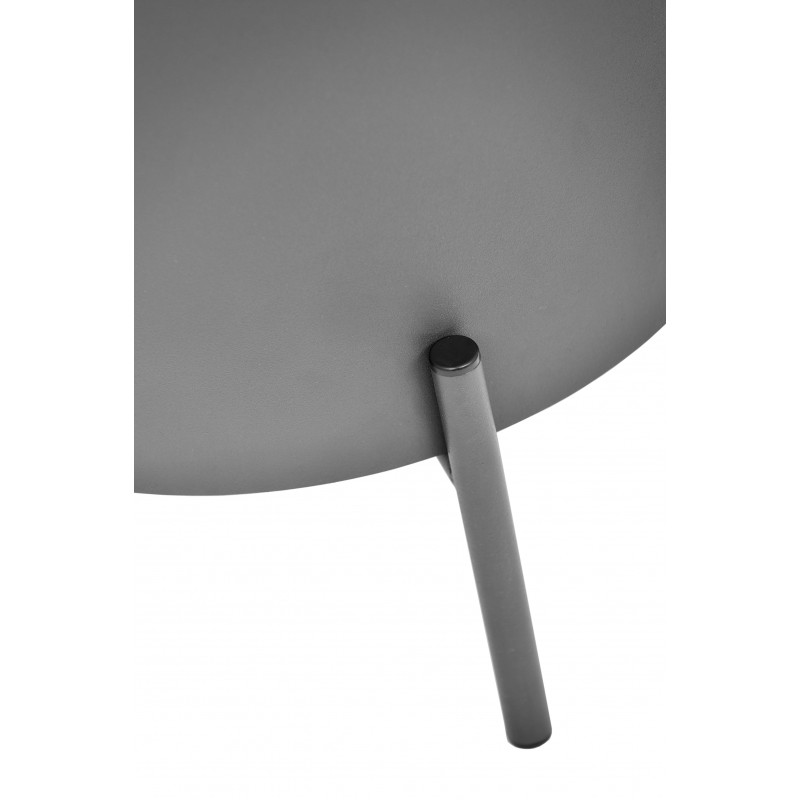
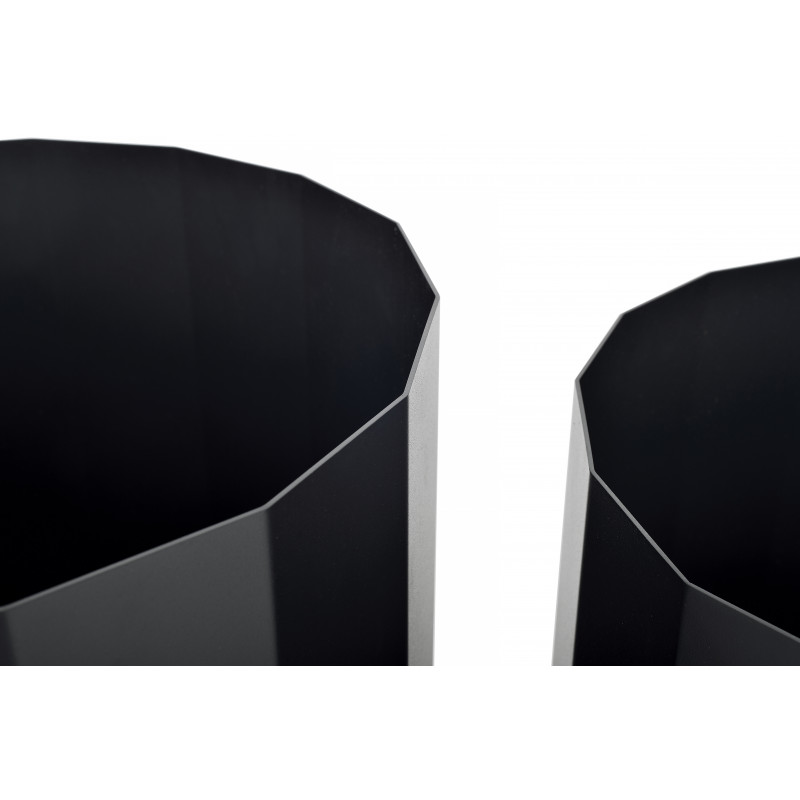

PRODUCTION / QUALITY
Quality, in
every detail.
Considered on the outside.
Resolved on the inside.
Steel, surface and construction.
A closer look at what makes a JunglePots planter.


Every part.
A purpose.
A planter is more than its outline. Its edges, joints and base determine how the object meets the space around it.
A slender round leg meets the curved body of Riverside Flow. The connection is part of its character, with supports and base systems specified individually for each collection.
- Structure
- Galvanized steel in the standard planter specification
- Construction
- Collection-specific joints, supports and base options

A quiet finish.
A clear character.
Galvanized steel, primer and powder coating form the standard material specification. On Dawn, the faceted walls catch the light differently, giving the dark coated surface its rhythm.
Start with a catalogue colour reference, then confirm the finish with a physical sample. Matte, gloss and custom colour enquiries are considered with your selected collection.
Anthracite / 7016
Screen colours are indicative. Photographs are not colour samples.
Discuss a finish ↗Made for the space
you have in mind.
The right specification starts with the collection, the location and how the planter will be used.
Find your collection ↗Indoor & outdoor use
The standard planter range is described for indoor and outdoor use. Confirm intended exposure, drainage and liner requirements for the selected model.
Dimensions & installation
Use the selected collection’s A/B/C drawing and variant schedule. Confirm weight, support type, fixing requirements and any load limits before installation.
Care & maintenance
Request care guidance for the specified finish and environment, including cleaning, drainage checks and any coating maintenance requirements.
Project-specific requirements
Share required performance evidence with your enquiry. The catalogue describes frost and UV resistance but does not supply test methods or rated limits. Custom materials and finishes require project-specific confirmation.
LET’S GET THE DETAILS RIGHT